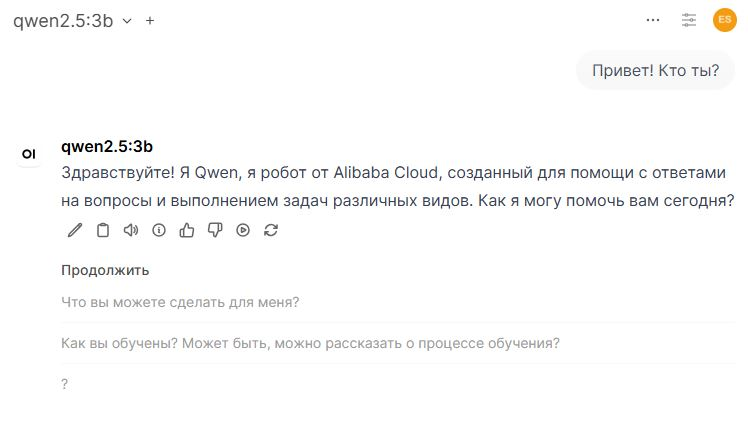
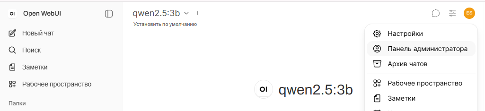
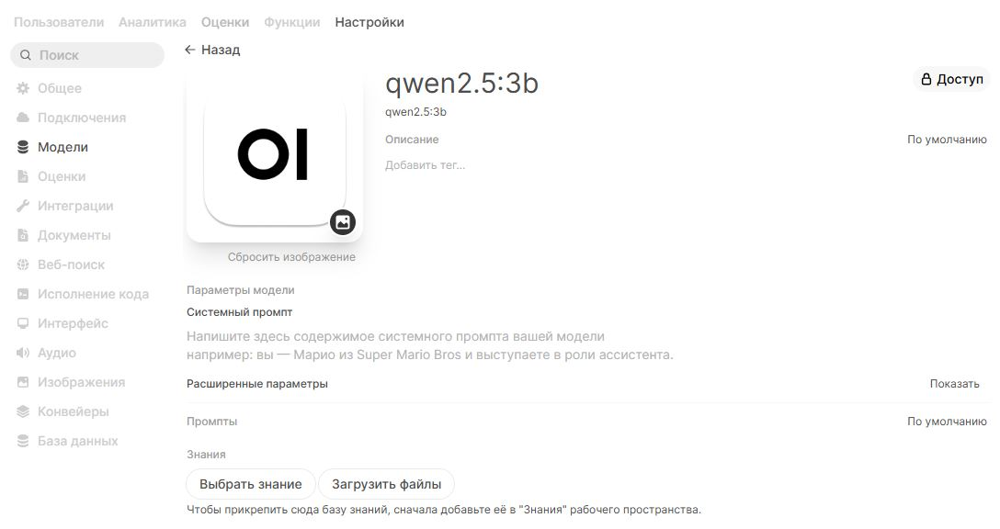
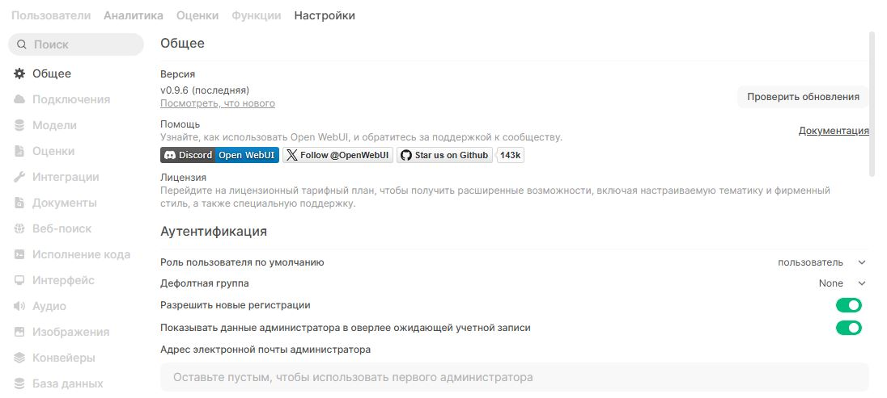

Здесь приводится краткая инструкция по установке локальной LLM на сервер и настройке графического веб-интерфейса для неё.
Развёртывание LLM на собственном компьютере или сервере имеет следующие преимущества:
Однако локальные LLM требуют достаточно больших вычислительных мощностей, в идеале — GPU. Такие компьютеры обычно недоступны рядовым пользователям, но некоторые LLM с относительно небольшим числом параметров можно запустить и на CPU при условии достаточного объёма оперативной памяти. Такие модели будут уступать полноценным большим LLM типа новейших версий Gemini или Qwen, но для ряда задач их может оказаться достаточно, особенно при условии их дообучения.
Для развёртывания локальной LLM можно использовать обычный персональный компьютер или арендовать сервер. При установке локальной LLM на ПК она будет доступна только с этого ПК. Если есть необходимость обеспечить удалённый и постоянный доступ к LLM для широкого круга пользователей, лучшим решением будет установка LLM на сервер.
Данная инструкция ориентирована на запуск локальной LLM на сервере без мощной видеокарты и написана на основе опыта работы с сервером со следующими характеристиками:
При наличии подходящих комплектующих можно организовать работу своего личного сервера (который будет "физически" принадлежать вам). (По сути, сервер — это всего лишь компьютер, который круглосуточно включён в сеть и готов отвечать на запросы с устройств-"клиентов".) Однако на практике это не всегда удобно, поэтому серверы чаще арендуют у компаний-провайдеров.
Для аренды сервера достаточно выбрать провайдера (Hostiman, RUVDS, ...), зарегистрироваться на его сайте, выбрать конфигурацию сервера и оплатить доступ. По состоянию на июнь 2026 года аренда сервера с перечисленными выше характеристиками стоит 3-4 тысячи рублей в месяц; чем лучше характеристики сервера, тем выше стоимость.
Можно арендовать сервер и с ОС Windows, но для большинства задач (не только связанных с локальными LLM) удобнее Linux.
Доступ к арендованному серверу осуществляется по протоколу SSH через командную строку. Вам потребуется установить на свой ПК c Windows SSH-клиент (например, PuTTY), и у вас появится доступ к терминалу сервера: вы сможете писать там команды, как при работе с обычным ПК с Linux.
В данной инструкции для развёртывания LLM используется связка Ollama + OpenWebUI. Это не единственное возможное решение, но одно из наиболее популярных и относительно простых: вам потребуется лишь установить необходимые программы на сервер, а все настройки LLM можно будет осуществлять через графический веб-интерфейс, который будет доступен "из коробки".
Итак, вы арендовали сервер с Ubuntu или собрали ПК с аналогичными характеристиками. Для начала установим Ollama — программу с открытым исходным кодом, которая предназначена для локального запуска различных LLM.
Перед установкой обновим индексы пакетов и систему:
sudo apt update && sudo apt upgrade -yУстанавливаем Ollama:
curl -fsSL https://ollama.com/install.sh | shПосле установки появится предупреждение: No NVIDIA/AMD GPU detected. Ollama will run in CPU-only mode. Это нормально, в нашей конфигурации сервера действительно нет GPU, поэтому LLM будет работать на CPU.
Загрузим и запустим модель qwen2.5:3b. Это небольшая модель, которая "понимает" русский язык и будет хорошо работать на 16 ГБ RAM:
ollama run qwen2.5:3bПосле загрузки Ollama предложит написать сообщение. Напишите что-нибудь для проверки, дождитесь ответа и нажмите Ctrl+D для выхода. Итак, Ollama установлена.
Теперь разрешим Ollama принимать подключения со всех адресов, чтобы впоследствии программа, которая будет отвечать за веб-интерфейс, могла взаимодействовать с LLM.
Откройте файл конфигурации Ollama:
sudo systemctl edit ollama.serviceВставьте эти строки между блоками ### Everything between this... и ### Lines below this...:
[Service]
Environment="OLLAMA_HOST=0.0.0.0"
Environment="OLLAMA_ORIGINS=*"Ctrl + O, затем Enter, затем выход Ctrl + X). Проследите, чтобы файл сохранился под именем ollama.service, а не каким-то другим, и в исходной директории.
Перезапустите службу Ollama, чтобы применить настройки:
sudo systemctl daemon-reload
sudo systemctl restart ollamaЧтобы "общаться" с установленной нами LLM через привычный графический интерфейс с чатом, мы воспользуемся готовым веб-интерфейсом OpenWebUI. Для его запуска нам потребуется Docker. Установим его по инструкции с официального сайта.
Удалим возможные конфликтующие пакеты:
sudo apt remove $(dpkg --get-selections docker.io docker-compose docker-compose-v2 docker-doc podman-docker containerd runc | cut -f1)Настраиваем apt-репозиторий:
sudo apt update
sudo apt install ca-certificates curl
sudo install -m 0755 -d /etc/apt/keyrings
sudo curl -fsSL https://download.docker.com/linux/ubuntu/gpg -o /etc/apt/keyrings/docker.asc
sudo chmod a+r /etc/apt/keyrings/docker.asc
sudo tee /etc/apt/sources.list.d/docker.sources <<EOF
Types: deb
URIs: https://download.docker.com/linux/ubuntu
Suites: $(. /etc/os-release && echo "${UBUNTU_CODENAME:-$VERSION_CODENAME}")
Components: stable
Architectures: $(dpkg --print-architecture)
Signed-By: /etc/apt/keyrings/docker.asc
EOF
sudo apt updateУстанавливаем пакеты:
sudo apt install docker-ce docker-ce-cli containerd.io docker-buildx-plugin docker-compose-pluginУбеждаемся, что Docker запустился после установки:
sudo systemctl status dockerЕсли не запустился, то запускаем принудительно:
sudo systemctl start dockerВключаем автозапуск Docker при запуске сервера:
sudo systemctl enable --now dockerЗагрузим и запустим docker-контейнер OpenWebUI:
sudo docker run -d -p 3000:8080 --add-host=host.docker.internal:host-gateway -v open-webui:/app/backend/data --name open-webui --restart always ghcr.io/open-webui/open-webui:mainНа вашем ПК в адресной строке браузера введите:
http://IP_АДРЕС_ВАШЕГО_СЕРВЕРА:3000В рабочем поле наверху слева кликнике на меню выбора языковой модели и выберите установленную нами qwen2.5:3b. Введите вопрос в поле ввода, дождитесь ответа. Готово! Вы общаетесь с LLM, установленной локально на вашем сервере.

Если вдруг доступных моделей в меню выбора нет, кликните по кружку с инициалами пользователя наверху справа и в выпадающем меню выберите "Панель администратора". Зайдите на вкладку "Настройки", слева выберите раздел "Модели" и включите qwen2.5:3b. Заодно сразу нажмите на иконку карандаша рядом с названием модели и в открывшемся окне выберите "Публичное" в настройках доступа: тогда эта модель станет доступна не только администратору, но и всем остальным пользователям, которые зарегистрируются впоследствии.


Обратите внимание, что в настройках модели вы также можете задать системный промпт и загрузить базу знаний, что позволит более точно настроить LLM для решения ваших задач.
В панели администратора зайдите на вкладку "Настройки" и в разделе "Аутентификация" включите регистрацию новых пользователей и настройте для них роль по умолчанию ("ожидающий", если требуется подтверждение регистрации администратором, и "пользователь", если ручное подтверждение не требуется, — тогда каждый новый пользователь сразу после регистрации сможет начать пользоваться LLM).

После перечисленных действий любой человек может перейти по тому же адресу и зарегистрироваться в качестве нового пользователя. Ему будет доступен тот же графический интерфейс, но с меньшими правами. Администратор будет иметь доступ к истории чатов пользователей и статистике по числу запросов к LLM.
Поскольку LLM установлена на сервере, эта веб-страница будет доступна всегда, когда включён сервер (это обеспечивается провайдером) и запущены служба Ollama и веб-интерфейс (это мы настроили самостоятельно на этапе установки ПО на сервер). В случае очень большого числа запросов от пользователей время ответов LLM может увеличиваться, поскольку возрастёт нагрузка на сервер. Но на практике локальные LLM обычно используются небольшим числом пользователей, которые при обычных сценариях использования LLM не смогут создать нагрузку на сервер, достаточную для ощутимого замедления работы модели.